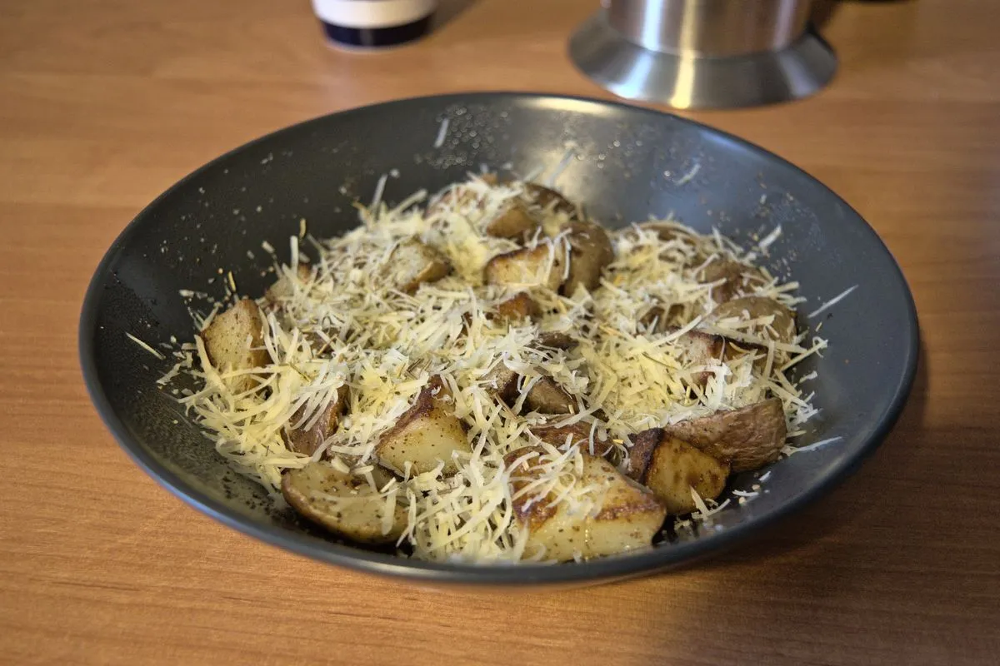

Parmesan potatoes

You can have this as a side dish, or for breakfast. Well, you can have it whenever and wherever you want if you are cooking it! We are grown ups here after all.
Ingredients
As you can already probably imagine, this dish doesn’t require a lot of ingredients. The quantities are for one average hungry student. If you want to have it as a side dish this should be enough for two persons.
- 2-3 medium-sized potatoes
- Butter
- Parmesan cheese
- Rosemary; dried should be fine, but fresh is obviously better
Directions
- Cut the potatoes into small cubes.
- Add some butter to a frying pan and heat up.
- Add potatoes to frying pan, salt them and fry over medium heat for about 20 minutes moving the potatoes from time to time.
- About 3-5 minutes before removing the potatoes from the heat, add some rosemary leaves a stir the potatoes.
- Remove potatoes from pan, serve and add shredded Parmesan and some freshly ground pepper on top.
- Enjoy!
Originally published at https://www.yaroslavps.com/food/parmesan-potatoes/
Contribution
- Yaroslav de la Peña Smirnov – website, other website, donate